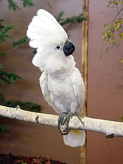

Kakaduor (Cacatuidae) är en familj bland papegojfåglarna. Klassificeringen av kakaduorna som familj är dock omstridd och gruppen kategoriseras ibland som en underfamilj av papegojor (Psittacidae). Familjen kakaduor indelas i fyra underfamiljer, sex eller åtta släkten[1] och ett 20-tal arter.
Kakaduorna har mycket gemensamt med andra papegojfåglar, som den karakteristiska böjda näbbformen och den zygodaktyla foten med två framåtriktade och två bakåtriktade tår. Kakaduorna skiljer sig morfologiska från andra papegojor genom sin upprätta fjäderkam på huvudet, de saknar en specifik textur på fjädrarna vilket resulterar i avsaknad av grönt och blått i fjäderdräkten.[2] Vidare har de bland annat gallblåsa och på ländryggen finns det fläckar med puderdun som sitter i par.[2] Andra typiska drag som dräktfärg, kroppsstorlek och ving- och näbbform har utvecklats genom parallell eller konvergent evolution.[3] Kakaduor är också, i allmänhet, större än äkta papegojor (dock är till exempel hyacintaran större än de största kakaduorna). Kakaduorna har fjädrar som kan täcka näbbens sidor. Kakaduor finns i flera färger som rosa, svart, orange, vit och grått. Tofsarna brukar dock oftast vara vita eller gula.
Vittofsad kakadua (C. alba)Kakaduorna har en mycket mer begränsad utbredning än äkta papegojor och finns i vilt tillstånd endast i och runt omkring Australien. Elva av de 21 arterna förekommer enbart i Australien, medan sju arter förekommer i Indonesien, Nya Guinea och på andra öar i södra Stilla havet. Tre arter finns både på Nya Guinea och i Australien. Många av de mest säregna kakaduaarterna lever på små öar utanför Australien. Därför är också många på grund av sitt ringa antal hotade.
Kakaduor skiljer sig något från övriga papegojor genom att inte vara utpräglade vegetarianer och äter även insekter och insektslarver[4]. Födan består annars övervägande av frukter och frön. Långnäbbad kakadua äter dock även rötter och växtdelar.[5] Utanför häckningsperioden lever kakaduor sällskapligt, i små grupper eller i stora flockar med flera hundra fåglar. I Australien räknas kakaduor som skadedjur då de attackerar spannmålsodlingar i stora flockar och plundrar dessa.[5] Liksom andra papegojor kan kakaduor bli mycket gamla. En individ av större gultofskakadua (C. galerita) på ett zoo i London blev 82 år gammal.[5]